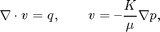
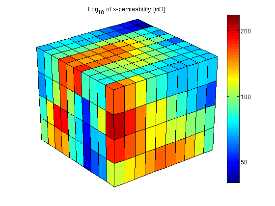
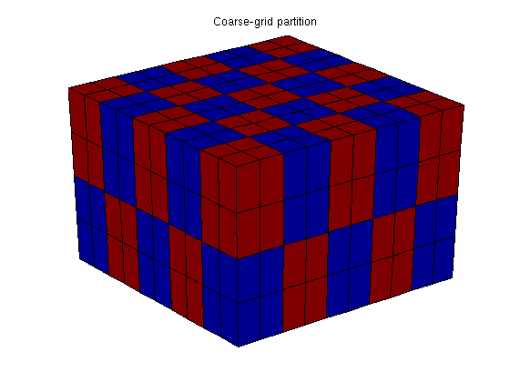
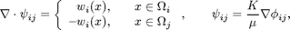
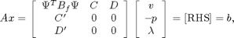
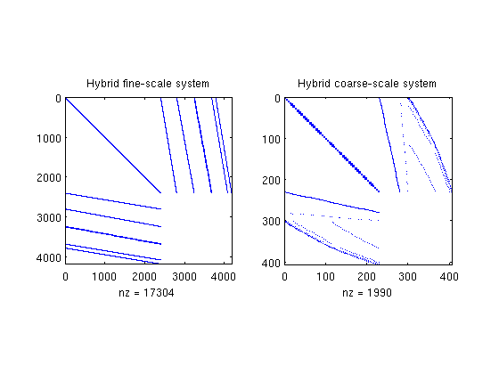
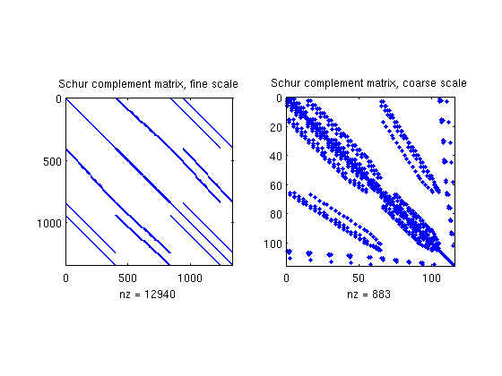
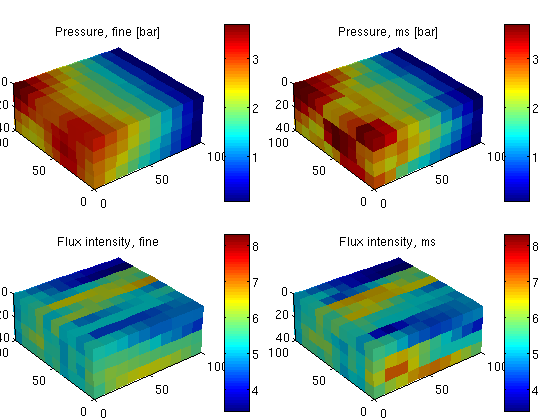

Contents
Basic Multiscale Tutorial
The purpose of this example is to give an overview of how to set up and use the multiscale mimetic pressure solver in its hybrid formulation. To this end, we will compare the fine-grid and the multiscale solution of the single-phase pressure equation

for a Cartesian grid with lognormal, anisotropic permeability. This example is built upon the setup used in the "Basic Flow-Solver Tutorial".
require coarsegrid
Define and visualize the model
We construct the Cartesian grid, set a lognormal anisotropic permeability with mean equal [1000 100 10] mD, and use the default single-phase fluid with unit viscosity
verbose = true; nx = 10; ny = 10; nz = 4; Nx = 5; Ny = 5; Nz = 2; G = cartGrid([nx, ny, nz],[100 100 40]*meter); G = computeGeometry(G); K = logNormLayers([nx, ny, nz], 1); K = 10 * K / mean(K(:)); rock.perm = bsxfun(@times, [10, 1, 0.1], convertFrom(K, milli*darcy())); fluid = initSingleFluid('mu' , 1*centi*poise , ... 'rho', 1014*kilogram/meter^3); gravity off
Set boundary conditions: a flux of 1 m^3/day on the global left-hand side Dirichlet boundary conditions p = 0 on the global right-hand side of the grid, respectively.
bc = fluxside([], G, 'LEFT', 100*meter()^3/day()); bc = pside (bc, G, 'RIGHT', 0);
After the grid structure is generated, we plot the permeability and the geometry
newplot plotCellData(G,log10(convertTo(rock.perm(:,1),milli*darcy))); shading faceted; title('Log_{10} of x-permeability [mD]'); view(3), camproj perspective, axis tight off cs = [50 100:100:1000]; h=colorbar; set(h,'YTick',log10(cs),'YTickLabel',cs');
Partition the grid
We partition the fine grid into a regular Nx-by-Ny-by-Nz coarse grid in index space so that each coarse block holds (nx/Nx)-by-(ny/Ny)-by-(nz/Nz) fine cells. The resulting vector p has one entry per fine-grid cell giving the index of the corresponding coarse block. After the grid is partitioned in index space, we postprocess it to make sure that all blocks consist of a connected set of fine cells. This step is superfluous for Cartesian grids, but is required for grids that are only logically Cartesian (e.g., corner-point and other mapped grids that may contain inactive or degenerate cells).
p = partitionUI(G, [Nx, Ny, Nz]); p = processPartition(G, p, 'Verbose', verbose); % Plot the partition newplot plotCellData(G,mod(p,2)); shading faceted; view(3); camproj perspective, axis tight off; title('Coarse-grid partition');
Elapsed time is 0.153417 seconds.
Having obtain a partitioning in which each coarse block is a connected collection of cells from the fine grid, we build the coarse-grid structure, which is quite similar to that of the fine grid
CG = generateCoarseGrid(G, p, 'Verbose', verbose);
display(CG); disp(CG.cells); disp(CG.faces);
CG =
cells: [1x1 struct]
faces: [1x1 struct]
partition: [400x1 double]
parent: [1x1 struct]
griddim: 3
num: 50
facePos: [51x1 double]
faces: [300x2 double]
num: 195
neighbors: [195x2 double]
connPos: [196x1 double]
fconn: [780x1 double]
Build linear systems
First we compute the mimetic inner product and build the linear system for the fine-scale equations
S = computeMimeticIP(G, rock, 'Verbose', verbose);
display(S);
Using inner product: 'ip_simple'.
Computing cell inner products ... Elapsed time is 0.038355 seconds.
Assembling global inner product matrix ... Elapsed time is 0.000375 seconds.
S =
BI: [2400x2400 double]
ip: 'ip_simple'
type: 'hybrid'
We generate the coarse-scale system by solving local flow problems,

one for each interface in the coarse grid. The basis functions for velocity and pressure are stored in two matrices. Unlike the fine-grid system, the B part of the hybrid system is not formed explicitly as a matrix block but constructed as a matrix product in our flow solver:

where B_f is the fine-scale B-block and \Psi contains the basis functions. In the structure, we store B\Psi rather than \Psi
CS = generateCoarseSystem(G, rock, S, CG, ones([G.cells.num, 1]), ... 'Verbose', verbose, 'bc', bc); display(CS);
Computing flux and pressure basis functions... Elapsed time is 0.718202 seconds.
CS =
basis: {195x1 cell}
basisP: {195x1 cell}
C: [300x50 double]
D: [300x195 double]
basisWeighting: 'perm'
activeFaces: [125x1 double]
activeCellFaces: [230x1 double]
type: 'hybrid'
sizeB: [300 300]
sizeC: [300 50]
sizeD: [300 195]
The linear hybrid system for the coarse-scale equations has a similar structure as the corresponding fine-scale system, but with significantly fewer unknowns.
newplot; subplot(1,2,1), cellNo = rldecode(1:G.cells.num, diff(G.cells.facePos), 2) .'; C = sparse(1:numel(cellNo), cellNo, 1); D = sparse(1:numel(cellNo), double(G.cells.faces(:,1)), 1, ... numel(cellNo), G.faces.num); spy([S.BI , C , D ; ... C', zeros(size(C,2), size(C,2) + size(D,2)); ... D', zeros(size(D,2), size(C,2) + size(D,2))]); title('Hybrid fine-scale system') subplot(1,2,2), spy(msMatrixStructure(G, CG, 'bc', bc)); title('Hybrid coarse-scale system');
Solve the global flow problems
xRef = solveIncompFlow (initResSol(G, 0.0), G, S, fluid, ... 'bc', bc, 'MatrixOutput',true); xMs = solveIncompFlowMS(initResSol(G, 0.0), G, CG, p, S, CS, fluid, ... 'bc', bc, 'MatrixOutput', true, 'Solver', 'hybrid');
Inspect the results
First we compare the Schur complement matrices
clf; subplot(1,2,1); spy(xRef.A); title('Schur complement matrix, fine scale'); subplot(1,2,2); spy(xMs.A); title('Schur complement matrix, coarse scale');
Then we compare the pressures and the flux intensities
clf plot_var = @(x) plotCellData(G, x); plot_pres = @(x) plot_var(convertTo(x.pressure(1:G.cells.num), barsa())); plot_flux = @(x) plot_var(accumarray(cellNo, ... abs(convertTo(faceFlux2cellFlux(G, x.flux), meter^3/day)))); subplot('Position',[0.02 0.52 0.46 0.42]), plot_pres(xRef); title('Pressure, fine [bar]') view(3), camproj perspective, axis tight equal, camlight headlight cax = caxis; colorbar subplot('Position',[0.52 0.52 0.46 0.42]), plot_pres(xMs); title('Pressure, ms [bar]') view(3), camproj perspective, axis tight equal, camlight headlight caxis(cax); colorbar subplot('Position',[0.02 0.02 0.46 0.42]), plot_flux(xRef); title('Flux intensity, fine') view(3), camproj perspective, axis tight equal, camlight headlight cax2 = caxis; colorbar subplot('Position',[0.52 0.02 0.46 0.42]), plot_flux(xMs); title('Flux intensity, ms') view(3), camproj perspective, axis tight equal, camlight headlight caxis(cax2); colorbar